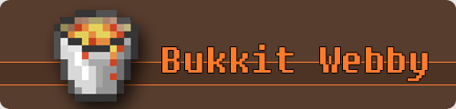

Index
Configuration
Backups
About
Logout
Save
Server IP
Server port
Level name
Level seed
Level type
DEFAULT
FLAT
LARGEBIOMES
Message of the day
Difficulty
Peaceful
Easy
Normal
Hard
Game mode
Survival
Creative
Hell world ?
Yes
No
Allow nether ?
Yes
No
Max players
View distance
Max build height
Online mode ?
Yes
No
Whitelist ?
Yes
No
Spawn monsters ?
Yes
No
Spawn animals ?
Yes
No
Spawn NPCS ?
Yes
No
Generate structures ?
Yes
No
PVP ?
Yes
No
Allow flight ?
Yes
No
Enable query
Yes
No
Query port
Enable RCON
Yes
No
RCON port
RCON password
Save